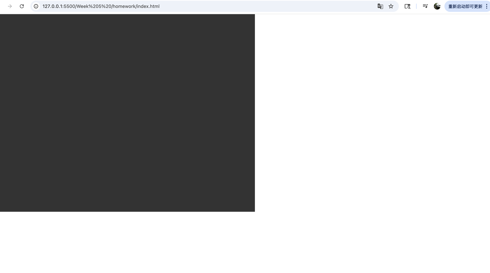
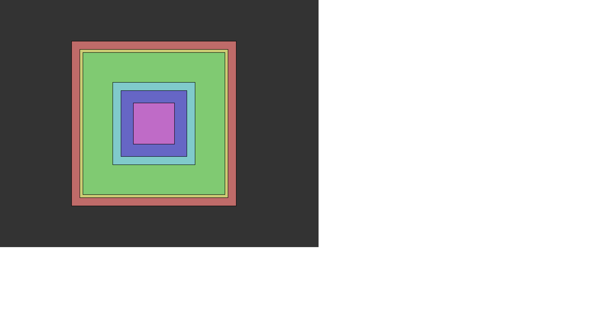
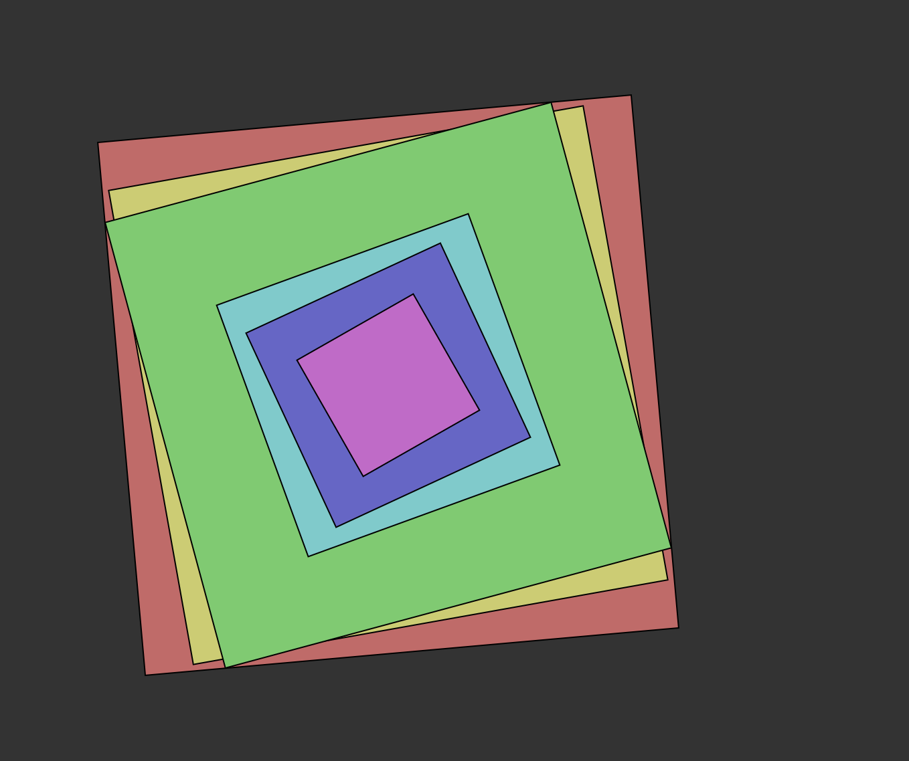
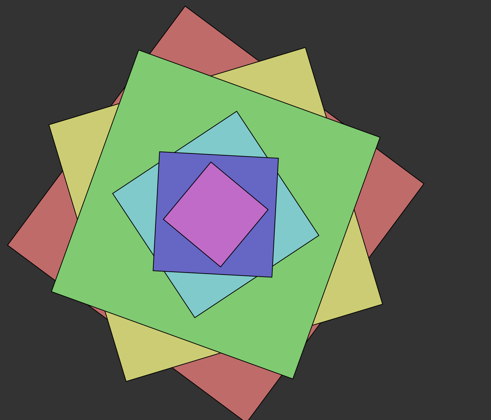
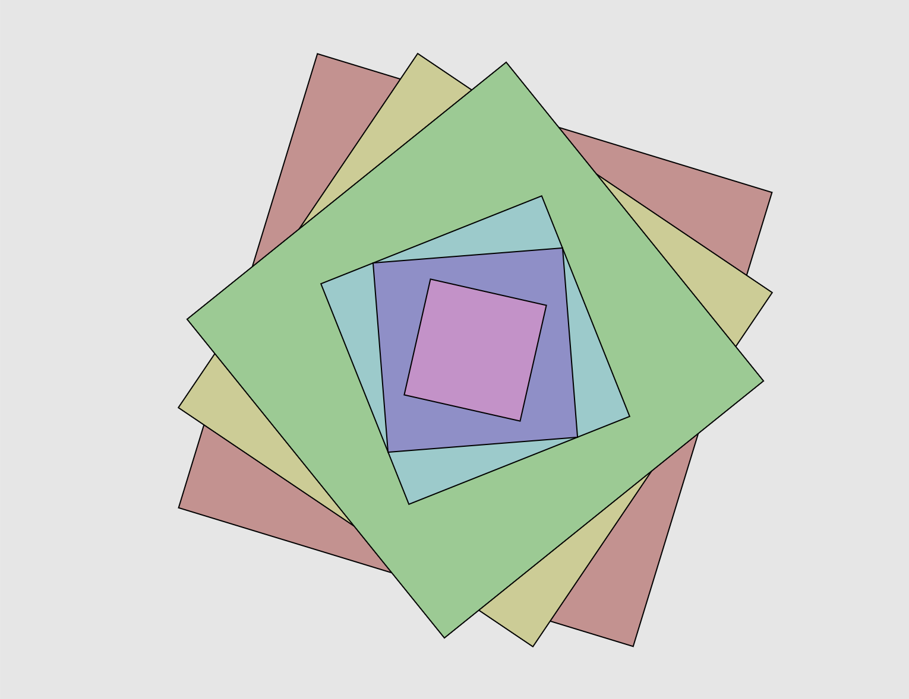
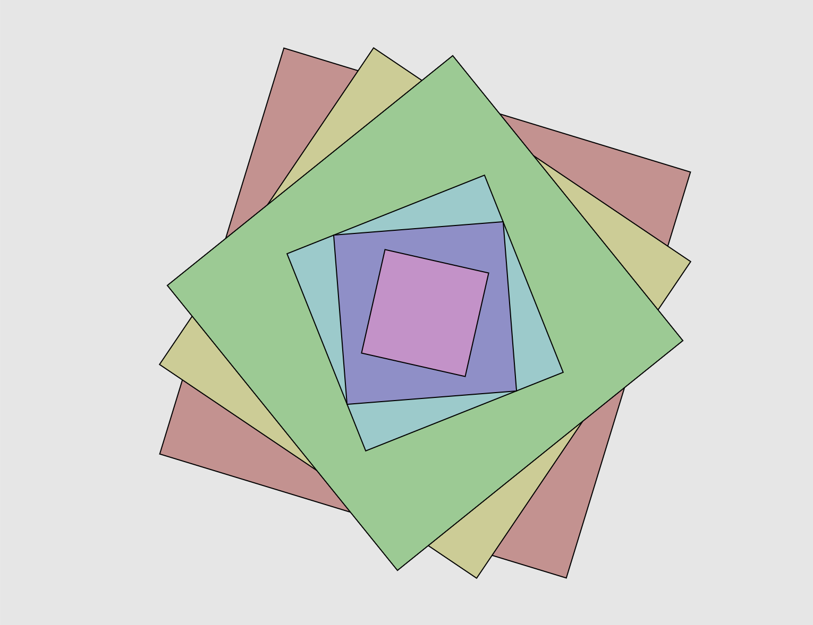

My Process
1. I created a background for my motion.

2. I created 6 rectangles with different sizes and colors.

3. I changed the angle (angle + 0.01) to make it rotates.

4. I put the (angle = angle + 0.01) inside the function draw, so it changes its speed of rotation and changed to a more complex motion.

5. When I moved out (angle = angle + 0.01) and put it after pop(), the speed changes.
 6. I can changed the background color by changing the 0.1 to 0.9 (to a lighter white background)

6. I can changed the background color by changing the 0.1 to 0.9 (to a lighter white background)
